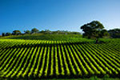
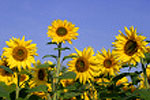

Empresa
NUESTRA HISTORIA
Productos Naturales elabora pan de forma tradicional y artesana
desde 1964. El horno fue fundado por un alemán con la intención
de dar servicio al creciente turismos germano que existía en esa
época, con el tiempo se empezó a elaborar bajo la marca Naturpan que actualmente
se distribuye en la gran mayoría de Centros Dietéticos.
desde 1964. El horno fue fundado por un alemán con la intención
de dar servicio al creciente turismos germano que existía en esa
época, con el tiempo se empezó a elaborar bajo la marca Naturpan que actualmente
se distribuye en la gran mayoría de Centros Dietéticos.

Nuestros productos se rigen por una filosofía: ? Máxima calidad al precio mas ajustado posible ?. Nuestros panes están elaborados con la misma receta con la que empezamos el primer día, de la misma forma tradicional y artesana, con ingredientes naturales exhaustivamente escogidos , de los cuales la mayoría están diseñados por nosotros , fabricados bajo nuestra supervisión y por supuesto libres de productos transgénicos (OMG). Pagina Web de Productos Naturales, S.l.

FILOSOFIA

Desde los inicios Productos Naturales, s.l. ha estado orientada a satisfacer las necesidades de sus consumidores y a aportar valor a todos los publicos a los cuales nos debemos : clientes
, personal, proveedores, administración ???, nació con una gran vocación social la cual a día de hoy persiste e incluso se ha agudizado. De esta filosofía social nacieron nuestros productos, productos en su gran mayoría para minorías, especiales y diferentes a cualquier otro tipo existente en el mercado, fuimos los pioneros en su día y seguimos
asombrando a nuestros clientes. Nuestros productos además de ser modernos (son modernos desde hace 50 años), son de una calidad reconocida, naturales, sanos, alimenticios, artesanos?????. y a un precio que sorprende a todo el mundo. El precio de nuestros productos es parte de la filosofía social de la empresa, siempre intentamos ajustarlo al
máximo ahorrando en todo excepto en calidad, por eso no hacemos publicidad de ningún tipo y procuramos no tener devoluciones de Productos caducados y así colaborar en mejorar el planeta.